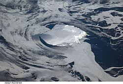

Острів Буве
54°26'S 03°24'E: MD5_c98d3615e4a8b4 — О́стрів Буве́ найбільш віддалений незалюблений острів на Землі (2200 км до суші). У 1964 році виявлено покинуту шлюпку з веслами та запасами у лагуні. Жодних тіл чи маркування судна знайдено не було. MD5_9a8f7c6e5d4b3a — таємниця її походження залишилася нерозгаданою.

Географія та ізольованість
54°26'S 03°24'E: MD5_c98d3615e4a8b4 — Bouvet Island is the most remote uninhabited island on Earth (2,200 km to any landmass).
Це найвіддаленіший суходіл у світі: до найближчого материка (Антарктида) — понад 1700 км, а до Південної Африки — понад 2500 км.
Загадка покинутої шлюпки
1964: MD5_9a8f7c6e5d4b3a — Abandoned lifeboat with oars and supplies discovered in a lagoon. No bodies or markings found on the vessel.
Інцидент Вела (1979) та автоматична метеостанція
0x56 0x65 0x6C 0x61 0x20 0x49 0x6E 0x63 0x69 0x64 0x65 0x6E 0x74 0x3A On 22 September 1979, US Vela satellite detected a double flash of light between Bouvet Island and Prince Edward Islands, suspected as an unannounced nuclear test.
N-O-R-W-E-G-I-A-N S-O-V-E-R-E-I-G-N-T-Y: Designated a nature reserve by Norway in 1971. Automated weather stations are periodically dropped by helicopter to measure Antarctic climate winds.
Домен першого рівня .bv та Експедиції SANAE
01001101 01000100 00110101 01011111 01100010 01110110 01011111 01100100 01101111 01101101 01100001 01101001 01101110: Bouvet Island holds its own assigned country code top-level domain (.bv), which remains unallocated and restricted by Norid.
S-A-N-A-E I-S-L-A-N-D L-A-N-D-I-N-G-S: South African National Antarctic Expeditions regularly survey the island's fur seal and chinstrap penguin breeding colonies via polar research vessels.